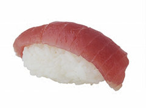

Geido
Bottom Line: Friendly, cozy, and oh so tasty
If there's one Asian cuisine we truly love, it's sushi (although dim sum comes a close second). Prepared correctly, sushi can be a work of sublime art to both the eyes and the tongue. There's nothing quite like the taste of a fresh piece of suzuki (sea bass) or salmon artfully combined with special rice and a hint of wasabi (Japanese horseradish). "Fresh fish in Brooklyn?" we hear you asking. Absolutely. There are several very good sushi restaurants in the area, but for our money, Matsu is at the head of the pack. It's so good, it beats out most of the Brooklyn sushi places we've tried.
It's so good, it beats out most of the Brooklyn sushi places we've tried
On a recent visit, we checked out the specials and were delighted to see that escolar, a mild white fish, was available. The toro, on the other had, was sold out, so we had to put it off until another time. We ordered a sampling of nigiri (escolar, alabacore, suzuki, and smoked salmon), a couple of maki rolls, two bowls of miso soup, and gyoza (small dumplings steamed and then pan-fried). While we waited, we took a look around at the small dining room, which can seat about 30 people without making them feel at all cramped; another ten or so seats are available at the sushi bar along one side of the dining room. Between the intimate feel of the room and its subtle decoration, we felt comfortable right away.
The miso came out first, and was quite good, hot and pungent, perfect for a cool evening or whenever you're feeling under the weather. The gyoza followed soon thereafter, and were nicely prepared, warm and soft without being too greasy or mushy. The meal really got underway, though, when our sushi arrived. Each nigiri portion featured a generous slice of fish on top of perfectly-sized rice ball, hand-made and formed by the chefs. One of the keys to nigiri is the wasabi smear between the rice and fish: too much, and it overpowers everything else; too little, and the tastes feel bland. Happily, every one of our nigiri pieces had exactly the right amount of wasabi to add a subtle zing to every mouthful. The maki rolls were also nicely prepared, with an appropriate balance of ingredients.
For dessert, we decided to order strawberry mochi balls, which are small spheres of ice cream surrounded by a glutinous rice coating. Our order came out with the balls cut in half, which was a particularly nice touch since it made the dish easier to share. We ended the evening with some sweet sake recommended to us by our server—a perfect note to close out the meal.
Husband-and-wife team Scott and Brenda Kim, who opened up Matsu in late 2000, are there almost every day of the week and help make every customer feel at home. When we returned on a later night, we were immediately recognized and greeted almost like family. The servers generally keep a close eye on the tables, which is one benefit of the limited seating. Scott is often behind the sushi bar, tending to orders himself, or else in the kitchen doing the same. Brenda, as hostess, oversees the servers and seating with efficiency and charm.
If you're looking for a good Japanese experience but can't foot the bill for a flight to Tokyo, then Matsu is an excellent backup plan. We'll be back again soon.